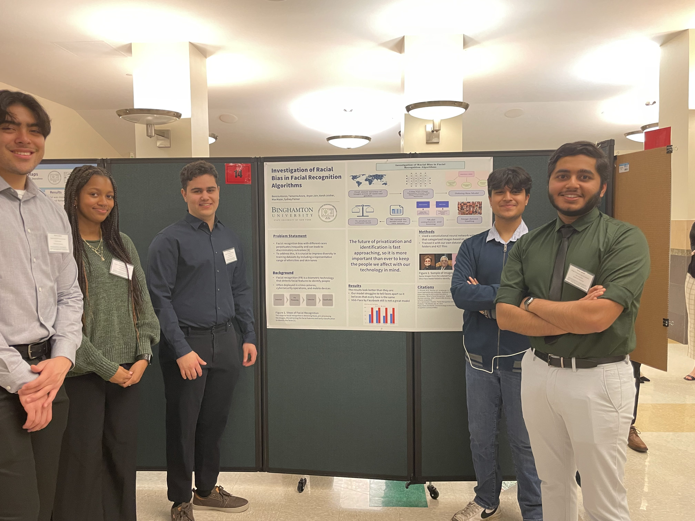
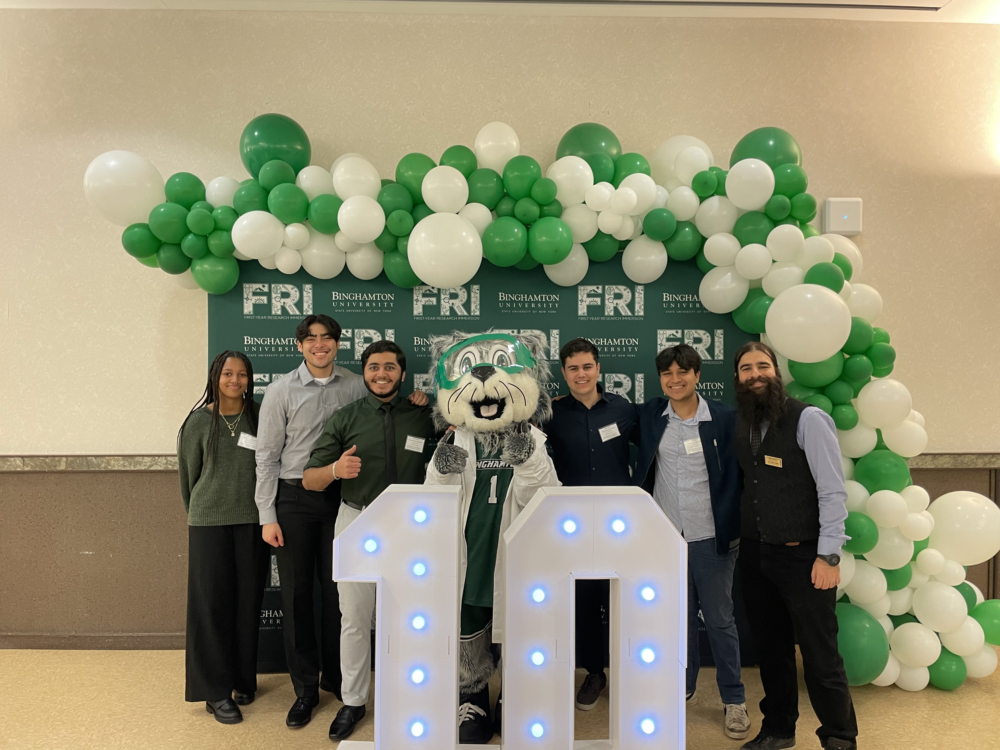
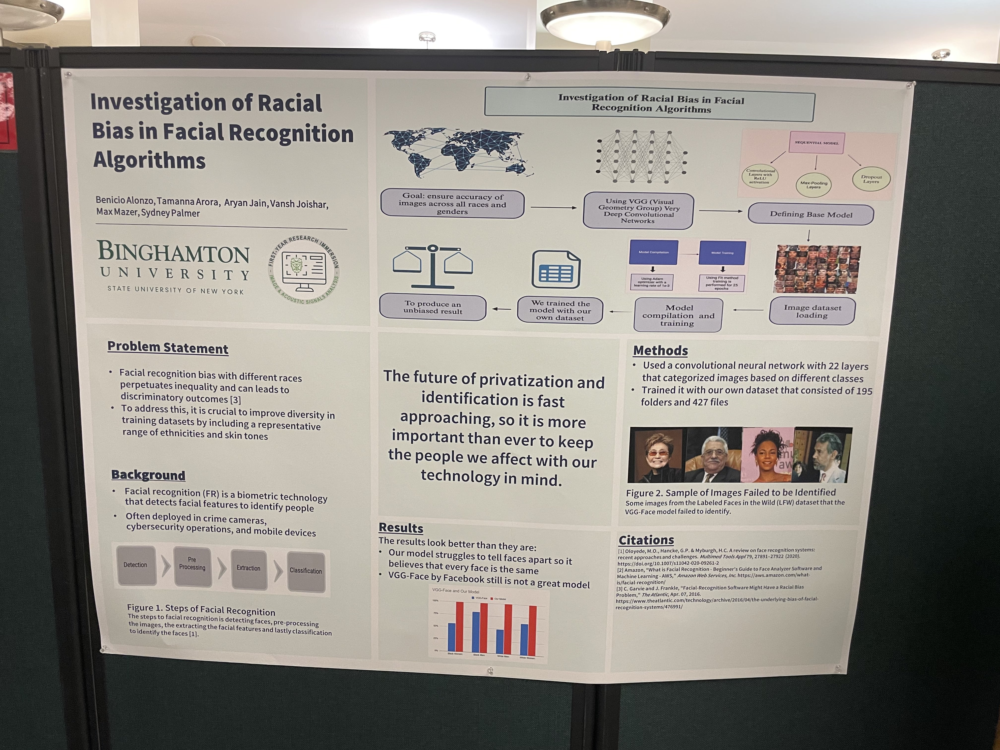
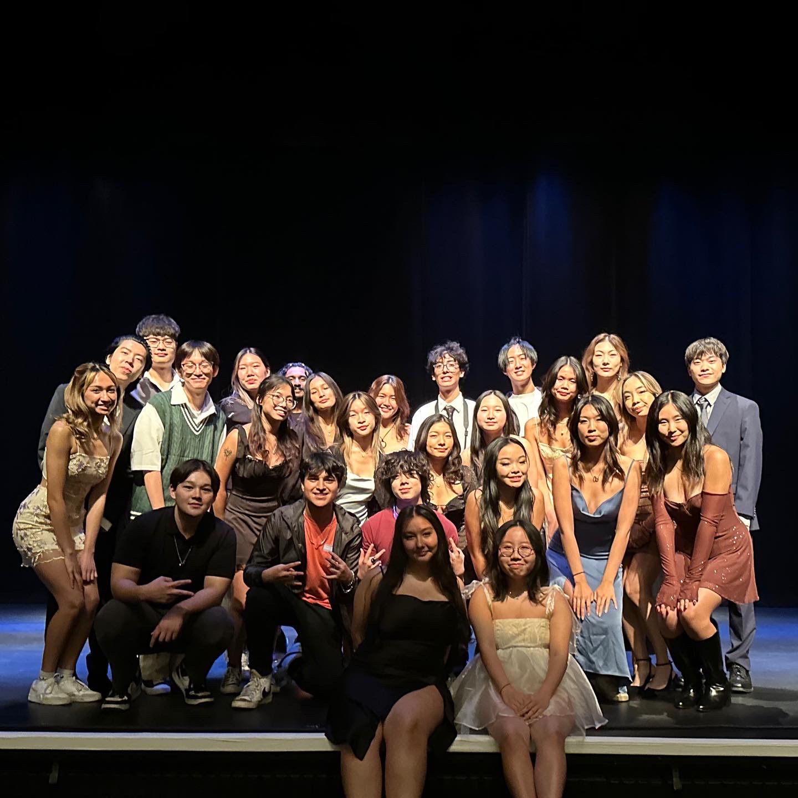
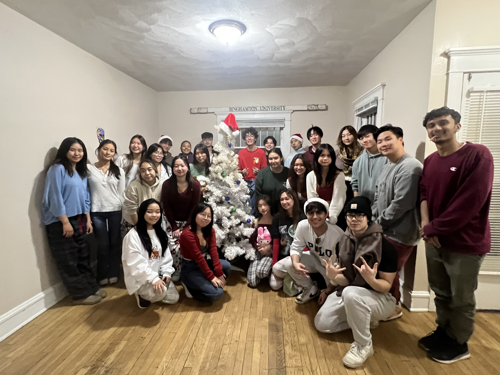

More Fun Pictures!
First Year Research Immersion Program
These are pictures of my First Year Research Immersion Program group. We made two large scale Machine Learning projects which can be found here: AI Housing Bias and here: Facial Recognition Bias



Asian Student Union
These are pictures of the Fall '23 to Spring '24 Asian Student Union. We run, help plan, and participate in almost every Asian / Asian American event on campus. We are a very diverse group and our events are inclusive to all people. We also help solve key issues in our community by using our resources to spread awareness and provide aid.


Delta Epsilon Psi
These are pictures of the Binghamton chapter of Delta Epsilon Psi Fraternity and of us conducting one of our biggest fundraisers for the Juvenile Diabetes Research Foundation!